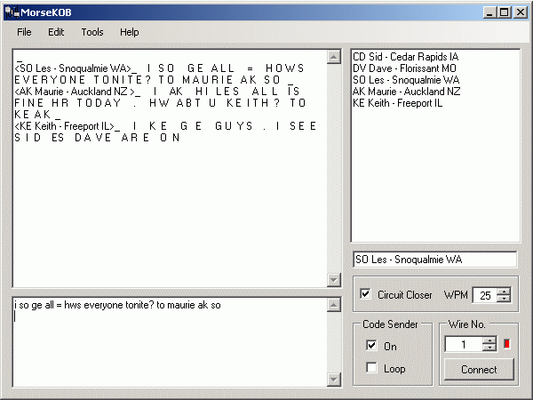
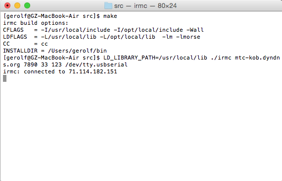
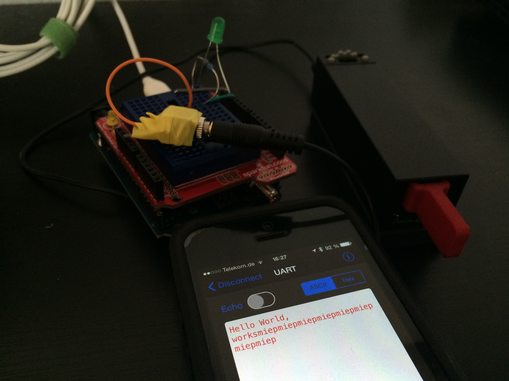
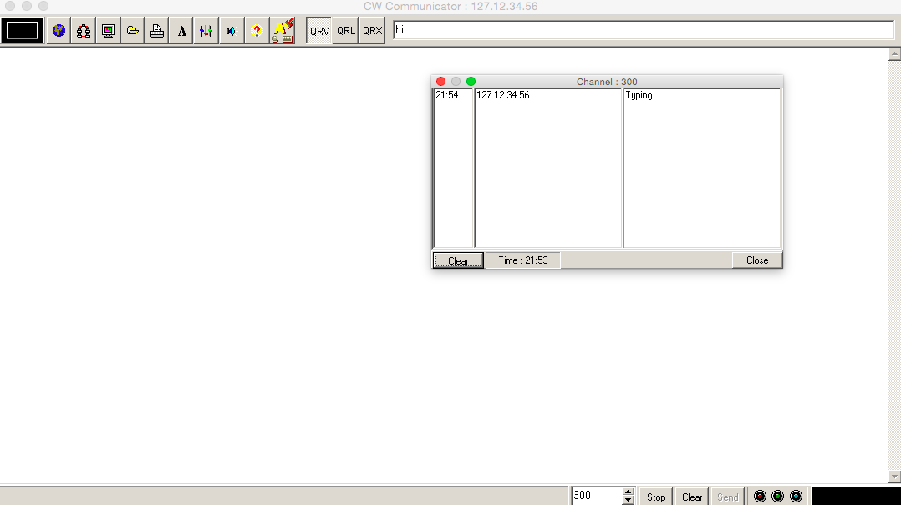
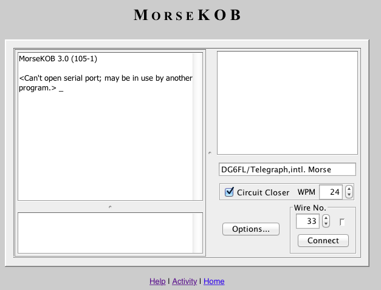

Software
Pick Your Platform
Clients for every major operating system — all interoperable.

Arduino
irmc-avr
Run MoIP on a Duemilanove with W5100 Ethernet. A minimal, open-source Arduino implementation.
View on GitHub →
Windows
MorseKOB 2.5
The original MorseKOB software by Les Kerr. Also available as MorseKOB 4.0 (Python) for cross-platform use.
Download →
Linux · macOS · BSD
irmc
A GPL-licensed C implementation. Works with serial and USB keys on Unix-like systems.
View on GitHub →
iOS
irmc-ios
MoIP on your iPhone or iPad. Supports external Bluetooth keys via ble-morse.
View on GitHub →
Windows
CW Communicator
The original CWCom software by John Samin (VK1EME) — the application that started it all in 1998. Also runs under Wine on macOS.
Download →
Browser · Java
MorseKOB 3.0
A Java applet version of MorseKOB by Les Kerr. Run it directly in your browser — no installation needed.
Try in Browser →